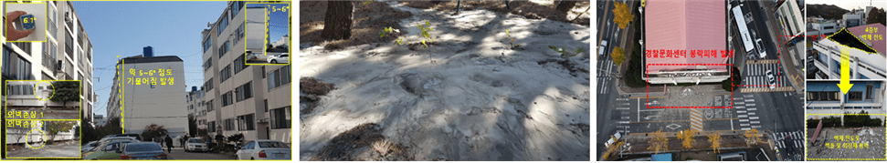
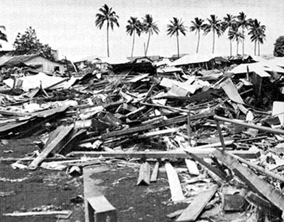
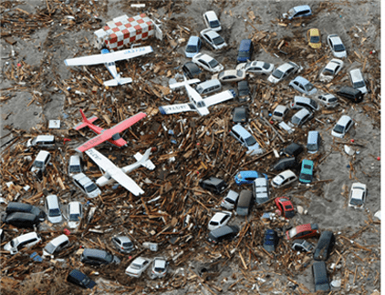

지진상식
지진사례
한반도 지역 및 해역에서 계측된 계기지진 중 규모 5.0 이상의 지진은 모두 10차례 있었습니다.(출처: 기상청 홈페이지)
- 9.12 지진
- 2016년 9월 12일 저녁 7시 44분경 규모 5.1의 전진이 발생 한 후 저녁 8시 32분경 경북 경주시 남남서쪽 8.7km 부근에서 규모 5.8의 본진이 발생하였습니다. 이 지진은 기상청이 기상통보 업무를 시작한 이래 가장 큰 규모의 지진으로 지진발생 원인은 경주 일대에 분포하는 양산대에 위치한 단층의 수평이동으로 추정합니다.
행정안전부의 조사에 따르면 인명 및 재산피해는 9,319건(2016년 9월 25일 기준)으로 추정합니다. - 포항지진
- 2017년 11월 15일 오후 14시 29분경 경북 포항시 북구 북쪽 8km 부근에서 규모 5.4의 지진이 발생하였습니다. 이 지진은 9.12 지진 다음으로 가장 큰 규모의 지진으로, 행정안전부가 집계한 피해상황은 이재민 1,945명 총 재산피해 85,022백만원(2017 재해연보)으로 추정합니다.

<포항지진>
불의 고리에 속한 나라에서는 엄청난 피해를 일으키는 대지진이 발생합니다. (출처:국외지진 순위(USGS),내용(위키피디아))
- 발디비아 대지진
- 1960년 5월 22일 칠레 발디비아 근처 니에블라 서쪽 10km 지점에서 발생한 규모 9.5 지진으로, 지금까지 관측된 지진 중에서 가장 큰 규모의 지진입니다. 지진에 의해 25m나 되는 지진 해일이 일어나 칠레 해안을 강타하였고, 진앙에서 1,000km나 떨어진 곳에서도 파고가 10.7m일 정도로 강력한 지진이었습니다. 이 지진으로 약 1,000명에서 최대 7,000여명의 인명피해가 발생한 것으로 알려졌습니다.
- 남아시아 대지진
- 2004년 12월 26일 길이 1,200km의 단층대가 인도 지각판과 버마 지각판 사이의 침강대에서 단숨에 20m나 움직이면서 규모 9.1의 해저지진이 발생하였습니다. 이 지진으로 발생한 해일이 육지를 덮치면서 스리랑카, 몰디브, 인도, 태국, 말레이시아, 인도네시아, 싱가포르, 아프리카의 소말리아까지 큰 피해를 입었으며, 약 23만명에서 27만명의 인명피해가 발생한 것으로 보고 되었습니다.
- 동일본 대지진
- 2011년 3월 11일 금요일 오후 14시 46분 도호쿠 오시카 반도 동쪽 70km지점, 수심 29km에서 발생한 해저지진으로 규모는 9.0으로 추정됩니다. 지진 발생 후 강력한 지진해일이 발생하여 도호쿠 지방의 와테현 미야코시에 40.5m의 해일이 덮쳤고, 내륙으로 10km까지 해일이 밀려온 것으로 알려졌습니다. 이 지진으로 2만여명의 인명피해가 발생하였고, 지진해일, 화재, 액상화, 후쿠시마 제1원자력 발전소 사고와 같은 2차 피해 또한 발생하였습니다.

<발디비아 지진(지진해일로 하와이 힐로의 부두가 파괴(출처:사이언스 북)>

<동일본 대지진(출처:한국일보)>